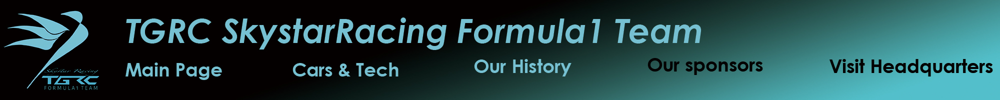
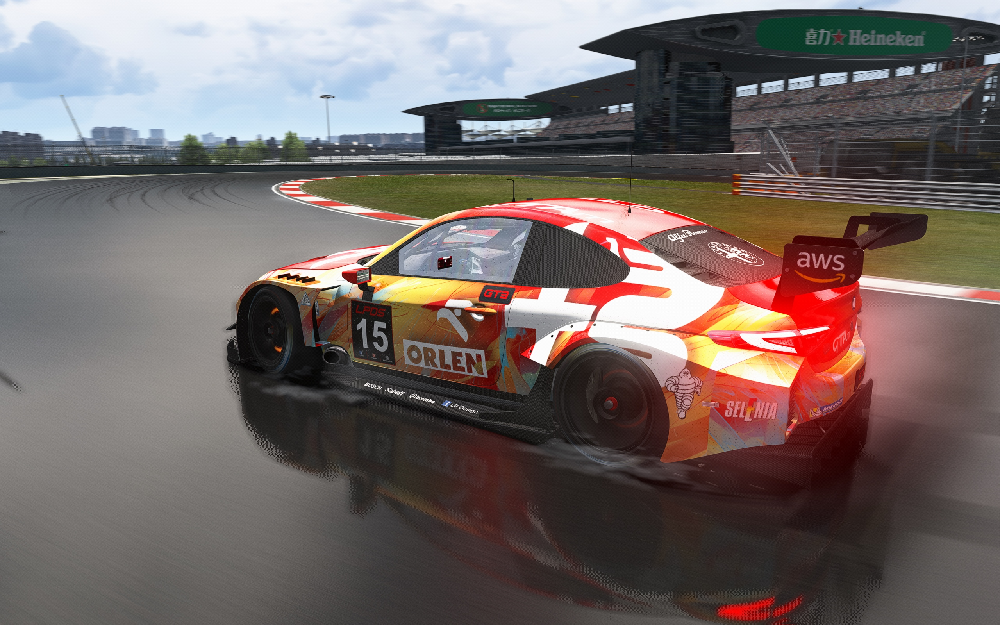
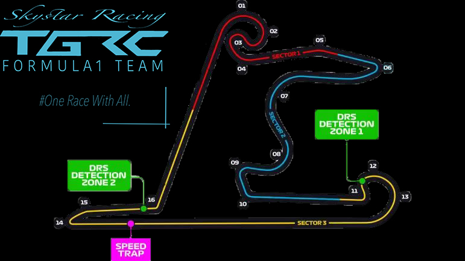
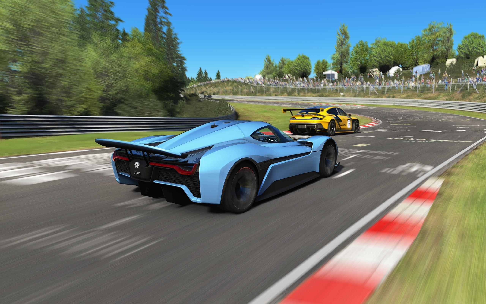

|  |
Welcome to TGRC's brand new headquarters |
The new headquarters of TGRC SkystarRacing F1 Team is located in Taiyuan, China. Maybe you are wondering why we are here to invite you to a Team's Headquarters. The answer is simple enough: our headquarters is not only a place where F1 racecars are constructed and tested, but a very comprehensive park to witness the birth of world's fastest car, getting close to hyper racecars and having a better understanding the car culture of China, as well as leaving a unforgettable experience. Well, that's to say, welcome to the heaven of motorsport fans! |
|  |
What Can I Do There?With an overall ticket, you can get access to nearly everywhere in the Headquarters. You can pay a visit to the factory where our spare parts are created, hanging around in our Team History&Cars Mesuem where dozens of racecars are exhibited and rest in the workers' cafe and restaurant. You will also receive a custmized souvenir present of TGRC F1 Team.The best thing you can do here is to xperience the professional F1 simulator which was used by our drivers' daily training. There are also chances to visit the motorsport testing cricuit. |
Driving Like a Professional Racer at the TECRANE Ring |
 |
The TECRANE Ring (Taiyuan International Circuit) is a F1 standard racing track built in 2023 by TC corpration. It's used as the testing track of TGRC and TCAUTO. However, you can bring your own cars here and race during the public-open day. With a full length of 4.7 km and 16 turns, you can experience what professional racers are experiencing. Don't have a sportscar? We provided huge amout of TCAUTO and Skystar race car here for you to rent. Our professional racing tutor will help you to get control of these beasts of speed. It is also possible for you to book the whole circuit for your own modified racecar. By doing so you are able to leave your own speed on our offical ranking. Its the best chance to prove your driving skill and the performence of your cars. |
Having Fun at Our Car Festival |
|  |
| The Headquarters is also a place where many China's biggest car festival are held. Here, you can really feel the true enthusiasm of Chinese motorsport fans, viewing fantastic cars and even meet the world's top-ranked racecar drivers. This is a place where we spread the Chinese car culture. |